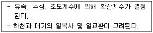
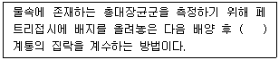
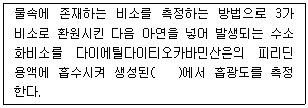
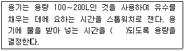
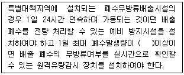
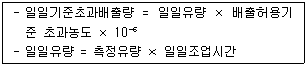

수질환경산업기사 (2012-03-04 기출문제)
1과목: 수질오염개론
1. 원생생물은 세포의 분화정도에 따라 진핵생물과 원핵생물로 나눌 수 있다. 다음 중 원핵세포와 비교하여 진핵세포에만 있는 것은?
- DNA
- 리보솜
- 편모
- 세포소기관
(정답률: 74%)

2. 다음 중 해수에 관한 설명으로 옳지 않은 것은?
- 해수의 Mg/Ca 비는 담수에 비하여 크다.
- 해수의 밀도는 수온, 수압, 수심 등과 관계없이 일정하다.
- 염분은 적도해역에서 높고 남북 양극 해역에서 낮다.
- 해수 내 전체질소 중 35% 정도는 암모니아성 질소, 유기질소 형태이다.
(정답률: 83%)
3. 화학합성 자가영양미생물계의 에너지원과 탄소원으로 가장 옳은 것은?
- 빛, CO2
- 유기물의 산화환원반응, 유기탄소
- 빛, 유기탄소
- 무기물의 산화환원반응, CO2
(정답률: 79%)
4. CaCl2 200mg/L는 몇 meq/L 인가? (단, Ca 원자량 : 40, Cl 원자량 : 35.5)
- 1.8
- 2.4
- 3.6
- 4.8
(정답률: 67%)
5. 호기성 박테리아(C5H7O2N)의 이론적 COD/TOC 비는? (단, 박테리아는 CO2, NH3, H2O로 분해)
- 0.83
- 1.42
- 2.67
- 3.34
(정답률: 77%)
6. 다음 중 조류의 경험적 화학 분자식으로 가장 적절한 것은?
- C4H7O2N
- C5H8O2N
- C6H9O2N
- C7H10O2N
(정답률: 85%)
7. 초기농도가 100mg/L인 오염물질의 반감기가 10 day라고 할 때 반응속도가 1차 반응을 따를 경우 5일 후 오염물질의 농도는?
- 70.7mg/L
- 75.7mg/L
- 80.7mg/L
- 85.7mg/L
(정답률: 70%)
8. 0.1M-NaOH의 농도를 mg/L 로 나타내면 얼마인가?
- 4
- 40
- 400
- 4000
(정답률: 69%)
9. 유량이 0.7m3/sec 이고 BOD5가 3.0mg/L, DO가 9.5mg/L인 하천이 있다. 이 하천에 유량이 0.4m3/sec, BOD5 25mg/L, DO가 4.0mg/L인 지류가 흘러 들어오고 있으며 합쳐진 하천의 평균유속이 15m/min이라면 하류 54km지점의 용존산소부족량은? (단, 온도 20℃, 혼합수의 k1=0.1day, k2=0.2/day이며 포화용존산소농도는 9.5mg/L, 상용대수 적용)
- 3.2mg/L
- 3.9mg/L
- 4.2mg/L
- 4.6mg/L
(정답률: 45%)
10. 물의 물리, 화학적 특성으로 옳지 않은 것은?
- 물은 온도가 낮을수록 밀도는 커진다.
- 물 분자는 H+와 OH-로 극성을 이루므로 유용한 용매가 된다.
- 물은 기화열이 크기 때문에 생물의 효과적인 체온조절이 가능하다.
- 생물체의 결빙이 쉽게 일어나지 않는 것은 물의 융해열이 크기 때문이다.
(정답률: 74%)
11. HCHO(Formaldehyde) 200mg/L의 이론적 COD 값은?
- 163mg/L
- 187mg/L
- 213mg/L
- 227mg/L
(정답률: 87%)
12. 5×10-5M Ca(OH)2를 물에 융해하였을 때 pH는 얼마인가? (단, Ca(OH)2는 물에서 완전 해리된다고 가정)
- 9.0
- 9.5
- 10.0
- 10.5
(정답률: 69%)
13. 수온이 20℃ 일 때 탈산소계수가 0.2/day(base 10)이었다면 수온 30℃에서의 탈산소계수(base 10)는? (단, θ = 1.042 임)
- 0.24/day
- 0.27/day
- 0.30/day
- 0.34/day
(정답률: 71%)
14. 다음이 설명하는 하천모델의 종류로 가장 옳은 것은?

- QUAL-Ⅰ
- WQRRS
- WASP
- EPAS
(정답률: 68%)
15. 친수성 콜로이드(Colloid)의 특성에 관한 설명으로 옳지 않은 것은?
- 염(鹽)에 대하여 큰 영향을 받지 않는다.
- 틴달효과가 현저하고 점도는 분산매 보다 작다.
- 다량의 염을 첨가하여야 응결 침전된다.
- 존재 형태는 유탁(에멀션)상태이다.
(정답률: 70%)
16. 탈산소 계수(상용대수 기준)가 0.12/day인 어느 폐수의 BOD5는 200mg/L이다. 이 폐수가 3일 후에 미분해 되고 남아있는 BOD(mg/L)는?
- 67
- 87
- 117
- 127
(정답률: 75%)
17. 유량이 10,000 m3/day인 폐수를 BOD 4 mg/L, 유량 4,000,000 m3/day인 하천에 방류하였다. 방류한 폐수가 하천수와 완전 혼합되어졌을 때 하천의 BOD가 1 mg/L 높아졌다면 하천에 가해진 폐수의 BOD 부하량은? (단, 기타 조건은 고려하지 않음)
- 1425 kg/day
- 1810 kg/day
- 2250 kg/day
- 4⑤0 kg/day
(정답률: 72%)
18. Wipple의 하천의 생태변화에 따른 4 지대 구분 중 '분해지대'에 관한 설명으로 옳지 않은 것은?
- 오염에 잘 견디는 곰팡이류가 심하게 번식한다.
- 여름철 온도에서 DO 포화도는 45% 정도에 해당된다.
- 탄산가스가 줄고 암모니아성 질소가 증가한다.
- 유기물 혹은 오염물을 운반하는 하수거의 방출지점과 가까운 하류에 위치한다.
(정답률: 65%)
19. 마그네슘 경도 200 mg/L as CaCO3를 Mg2+의 농도로 환산하면 얼마인가? (단, Mg 원자량 : 24)
- 48 mg/L
- 72 mg/L
- 96 mg/L
- 120 mg/L
(정답률: 53%)
20. 적조 발생지역과 가장 거리가 먼 것은?
- 정체 수역
- 질소, 인 등의 영양염류가 풍부한 수역
- upwelling 현상이 있는 수역
- 갈수시기 수온, 염분이 급격히 높아진 수역
(정답률: 78%)
2과목: 수질오염방지기술
21. 유량이 5000m3/day이고 BOD, SS 및 NH3-N의 농도가 각각 20mg/L, 25mg/L 및 23mg/L인 유출수의 질소 (NH3-N)를 제거하기 위해 파괴점 염소주입 공정이 이용될 때 1일 염소 투입량은? (단, 투입염소(Cl2)대 처리된 암모니아성 질소(NH3-N)의 질량비는 9:1, 최종유출수의 NH3-N 농도는 1.0mg/L로 한다.)
- 620 kg/day
- 740 kg/day
- 990 kg/day
- 1280 kg/day
(정답률: 40%)
22. 총 처리수량은 50,000m3/일, 여과속도는 180m/일, 정방형 급속여과지 1지의 크기는? (단, 병렬 처리 기준이며 동일한 여과지수는 8지, 예비지는 고려하지 않음)
- 5.9m × 5.9m
- 6.7m × 6.7m
- 7.8m × 7.8m
- 8.4m × 8.4m
(정답률: 61%)
23. 슬러지량이 300m3/day로 유입되는 소화조의 고형물(VS기준) 부하율은 5kg/m3ㆍday이다. 슬러지의 고형물(TS) 함량은 4%, TS중 VS 함유율이 70%일 때 소화조의 용적은? (단, 슬러지 비중은 1.0)
- 1960 m3
- 1820 m3
- 1720 m3
- 1680 m3
(정답률: 47%)
24. BOD5 농도가 2000mg/L이고 1일 폐수배출량이 1000m3인 산업폐수를 BOD5오염 부하량이 500kg/day로 될 때 까지 감소시키기 위해서 필요한 BOD5 제거효율은?
- 70%
- 75%
- 80%
- 85%
(정답률: 49%)
25. 가스 상태의 염소가 물에 들어가면 가수분해와 이온화 반응이 일어나 살균력을 나타낸다. 이 때 살균력이 가장 높은 pH의 범위는?
- 산성영역
- 알칼리성영역
- 중성영역
- pH와 관계없다
(정답률: 80%)
26. 고형물 농도 10g/L인 슬러지를 하루 480m3 비율로 농축 처리하기 위해 필요한 연속식 슬러지 농축조의 표면적은? (단, 농축조의 고형물 부하는 4kg/m2ㆍhr로 한다.)
- 50m2
- 100m2
- 150m2
- 200m2
(정답률: 41%)
27. MLSS가 2800mg/L인 활성슬러지공법 폭기조의 부피가 1600m3 이다. 매일 40m3의 폐슬러지(농도 0.8%)를 혐기성 소화조로 보내 처리할 때 슬러지 체류시간(SRT)는? (단, 기타 조건은 고려하지 않는다.)
- 8일
- 11일
- 14일
- 18일
(정답률: 74%)
28. 인구 45,000인 도시의 폐수를 처리하기 위한 처리장을 설계 하였다. 폐수의 유량은 350ℓ/인ㆍday이고 침강탱크의 체류시간 2hr, 월류속도 35m3/m2ㆍday가 되도록 설계하였다면 이 침상 탱크의 용적(v)과 표면적(A)은?
- v = 1313m3, A = 540m2
- v = 1313m3, A = 450m2
- v = 1475m3, A = 540m2
- v = 1475m3, A = 450m2
(정답률: 64%)
29. 활성슬러지법에서 폭기조로 유입되는 폐수량이 500m3/day, SVI 120인 조건에서 혼합액 1L를 30분간 침전했을 때 300mL가 침전(침전 슬러지 용적) 되었다면 폭기조의 MLSS농도(mg/L)는?
- 1500
- 2000
- 2500
- 3000
(정답률: 59%)
30. 다음의 생물학적 인 및 질소제거 공정 중 질소 제거를 주목적으로 개발한 공법으로 가장 적절한 것은?
- 4단계 Bardenpho 공법
- A2/O 공법
- A/O 공법
- Phostrip 공법
(정답률: 72%)
31. Jar test에서 Alum 최적 주입율이 40ppm 이라면 420m3/hr의 폐수에 필요한 Alum(농도: 7.5%)의 량은? (단, 비중은 1.0 기준)
- 204 ℓ/hr
- 214 ℓ/hr
- 224 ℓ/hr
- 234 ℓ/hr
(정답률: 62%)
32. 침전지를 설계하고자 한다. 침전시간은 2hr, 표면부하율 30m3/m2ㆍday 이며 폭과 길이의 비는 1:5로 하고 폭을 10m로 하였을 때 침전지의 용량은?
- 875 m3
- 1250 m3
- 1750 m3
- 2450 m3
(정답률: 64%)
33. 유입수의 BOD 농도가 270 mg/L인 폐수를 폭기시간 8시간, F/M비를 0.4 로 처리하고자 한다면 유지되어야 할 MLSS의 농도(mg/L)는?
- 2025
- 2525
- 3025
- 3525
(정답률: 35%)
34. 구형입자의 침강속도가 stokes법칙에 따른다고 할 때 직경 0.5mm이고, 비중이 2.5인 구형입자의 침강속도는? (단, 물의 밀도는 1000kg/m3이고, 점성계수 는 1.002 × 10-3kg/mㆍsec라고 가정)
- 0.1 m/sec
- 0.2 m/sec
- 0.3 m/sec
- 0.4 m/sec
(정답률: 73%)
35. BOD 1kg 제거에 필요한 산소량은 산소 2kg이다. 공기 1m3에 함유되어 있는 산소량은 0.277kg이라 하고 포기조에서 공기 용해율을 4%(부피기준)라고 하면, BOD 5kg 제거하는데 필요한 공기량은?
- 약 700 m3
- 약 900 m3
- 약 1100 m3
- 약 1300 m3
(정답률: 50%)
36. RBC(회전원판 접촉법)에 관한 설명으로 옳지 않은 것은?
- 미생물에 대한 산소공급 소요전력이 적다는 장점이 있다.
- RBC시스템에서 재순환이 없고 유지비가 적게 소요된다.
- RBC조에서 메디아는 전형적으로 약 40%가 물에 잠기도록 한다.
- 다른 생물학적 공정에 비해 장치의 현장 시스템으로의 Scale-up이 용이하다.
(정답률: 75%)
37. 산화지(oxidation pond)를 이용하여 유입량 2000m3/day이고, BOD와 SS 농도가 각각 100mg/L 인 폐수를 처리하고자 한다. 산화지의 BOD부하율이 2g BOD/m2ㆍday로 할 때 폐수의 체류시간은? (단, 장방형이며 산화지 깊이: 2m)
- 80 days
- 100 days
- 120 days
- 140 days
(정답률: 50%)
38. 포기조 내 BOD용적부하가 0.5kg-BOD/m3d 일 때 F/M비는? (단, 포기조 MLSS는 2000mg/L이다.)
- 0.15kg-BOD/kg-MLSSㆍd
- 0.20kg-BOD/kg-MLSSㆍd
- 0.25kg-BOD/kg-MLSSㆍd
- 0.30kg-BOD/kg-MLSSㆍd
(정답률: 74%)
39. A 폐수는 유량 1200m3/day, BOD5 800mg/L이고, B 폐수는 유량 1900 m3/day, BOD5 120mg/L 이다. 이를 완전히 혼합하여 활성 슬러지법으로 처리하고자 한다. BOD 용적부하가 0.6kg BOD5/m3-day 이라면 포기조의 용적은?
- 1980 m3
- 2608 m3
- 3910 m3
- 4340 m3
(정답률: 53%)
40. 360g의 초산(CH3COOH)이 35℃로 운전되는 혐기성 소화조에서 완전히 분해될 때 발생되는 CH4의 양은? (단, 1기압 기준, 소화조 온도를 기준으로 함)
- 약 126L
- 약 134L
- 약 144L
- 약 152L
(정답률: 27%)
3과목: 수질오염공정시험방법
41. 다음 중 직각 3각 웨어로 유량을 산정하는 식으로 옳은 것은? (단, Q : 유량(m3/분), K : 유량계수, h : 웨어의 수두(m), b : 절단의 폭(m))
- Q = Kㆍh3/2
- Q = Kㆍh5/2
- Q = Kㆍbㆍh3/2
- Q = Kㆍbㆍh5/2
(정답률: 83%)
42. 공장폐수 및 하수유량(관 내의 유량측정방법)을 측정하는 장치 중 공정수(process water)에 적용하지 않는 것은?
- 유량측정용 노즐
- 오리피스
- 벤튜리미터
- 자기식유량측정기
(정답률: 68%)
43. 다음은 총대장균군-막여과법에 관한 내용이다. ( )안에 옳은 내용은?

- 금속성 광택을 띠는 적색이나 진한 적색
- 금속성 광택을 띠는 청색이나 진한 청색
- 여러 가지 색조를 띠는 적색
- 여러 가지 색조를 띠는 청색
(정답률: 65%)
44. 수질오염공정시험기준 상 시안 정량을 위해 적용 가능한 시험방법과 가장 거리가 먼 것은?
- 자외선/가시선 분광법
- 이온전극법
- 이온크로마토그래피
- 연속흐름법
(정답률: 36%)
45. 감응계수에 관한 내용으로 옳은 것은?
- 감응계수는 검정곡선 작성용 표준용액의 농도(C)에 대한 반응값(R)으로 [감응계수 = (R/C)]로 구한다.
- 감응계수는 검정곡선 작성용 표준용액의 농도(C)에 대한 반응값(R)으로 [감응계수 = (C/R)]로 구한다.
- 감응계수는 검정곡선으로 작성용 표준용액의 농도(C)에 대한 반응값(R)으로 [감응계수 = (CR-1)]로 구한다.
- 감응계수는 검정곡선으로 작성용 표준용액의 농도(C)에 대한 반응값(R)으로 [감응계수 = (CR+1)]로 구한다.
(정답률: 77%)
46. 보존방법이 나머지와 다른 측정 항목은?
- 부유물질
- 전기전도도
- 아질산성질소
- 잔류염소
(정답률: 59%)
47. 다음은 비소를 자외선/가시선 분광법으로 측정하는 방법이다. ( )안에 옳은 내용은?

- 적색 착화합물을 460nm
- 적자색 착화합물을 530nm
- 청색 착화합물을 620nm
- 황갈색 착화합물을 560nm
(정답률: 67%)
48. 자외선/가시선 분광법(부루신법)으로 질산성 질소를 측정할 때 정량한계는?
- 0.01mg
- 0.⑤mg
- 0.1mg
- 0.5mg
(정답률: 43%)
49. 총칙 중 용어의 정의로 옳지 않은 것은?
- '감압'이라 함은 따로 규정이 없는 한 15mmHg 이하를 뜻한다.
- '기밀용기'라 함은 취급 또는 저장하는 동안에 기체 또는 미생물이 침입하지 않도록 내용물을 보호하는 용기를 말한다.
- '약'이라 함은 기재된 양에 대하여 10% 이상의 차가 있어서는 안된다.
- 시험조작 중 '즉시'란 30초 이내에 표시된 조작을 하는 것을 말한다.
(정답률: 83%)
50. 시료채취량 기준에 관한 내용으로 옳은 것은?
- 시험항목 및 시험횟수에 따라 차이가 있으나 보통 1∼2L 정도이어야 한다.
- 시험항목 및 시험횟수에 따라 차이가 있으나 보통 3∼5L 정도이어야 한다.
- 시험항목 및 시험횟수에 따라 차이가 있으나 보통 5∼7L 정도이어야 한다.
- 시험항목 및 시험횟수에 따라 차이가 있으나 보통 8∼10L 정도이어야 한다.
(정답률: 78%)
51. 자외선/가시선 분광법에 의한 철의 정량에 필요하지 않는 시약은?
- 티오황산나트륨
- 암모니아수
- 아세트산암모늄
- 염산하이드록실아민
(정답률: 52%)
52. 수소이온농도를 기준전극과 비교전극으로 구성된 pH측정기로 측정할 때 간섭물질에 대한 설명으로 옳지 않은 것은?
- pH 10 이상에서 나트륨에 의해 오차가 발생할 수 있는데 이는 “낮은 나트륨 오차 전극”을 사용하여 줄일 수 있다.
- pH는 온도변화에 따라 영향을 받는다
- 기름층이나 작은 입자상이 전극을 피복하여 pH측정을 방해할 수 있다.
- 유리전극은 산화 및 환원성 물질, 염도에 의해 간섭을 받는다.
(정답률: 57%)
53. 냄새 측정 시 시료에 잔류염소가 존재하는 경우 조치 내용으로 옳은 것은?
- 티오황산나트륨 용액을 첨가하여 잔류염소를 제거
- 아세트산암모늄 용액을 첨가하여 잔류염소를 제거
- 과망간산칼륨 용액을 첨가하여 잔류염소를 제거
- 황산은 분말을 첨가하여 잔류염소를 제거
(정답률: 80%)
54. 다음은 공장폐수 밒 하수유량측정방법 중 최대유량이 1m3/min 미만인 경우에 용기사용에 관한 설명이다. ( )안에 옳은 내용은?

- 10초 이상
- 20초 이상
- 20초 이상
- 40초 이상
(정답률: 63%)
55. 총칙 중 온도표시에 관한 설명으로 옳지 않은 것은?
- 찬 곳은 따로 규정이 없는 한 0∼15℃의 곳을 뜻한다.
- 냉수는 15℃ 이하를 말한다.
- 온수는 60∼70℃를 말한다.
- 시험은 따로 규정이 없는 한 실온에서 조작한다.
(정답률: 81%)
56. 냄새항목을 측정하기 위한 시료의 최대보존기간 기준은?
- 2시간
- 4시간
- 6시간
- 8시간
(정답률: 83%)
57. 현장에서 측정하여야 하는 수온의 측정 기준으로 옳은 것은?
- 30분 이상 간격으로 2회이상 측정한 후 산술평균
- 30분 이상 간격으로 4회이상 측정한 후 산술평균
- 1시간 이상 간격으로 2회이상 측정한 후 산술평균
- 1시간 이상 간격으로 4회이상 측정한 후 산술평균
(정답률: 71%)
58. 적외선/가시선 분광법에서 흡광도 값이 1이란 무엇을 의미하는가?
- 입사광의 1%의 빛이 액층에 의해 흡수된다.
- 입사광의 10%의 빛이 액층에 의해 흡수된다.
- 입사광의 90%의 빛이 액층에 의해 흡수된다.
- 입사광의 100%의 빛이 액층에 의해 흡수된다.
(정답률: 70%)
59. 유기물 함량이 비교적 높지 않고 금속의 수산화물, 산화물, 인산염 및 황화물을 함유하고 있는 시료에 적용되며 휘발성 또는 난용성 염화물을 생성하는 금속 물질의 분석에는 주의하여야 하는 시료의 전처리 방법(산분해법)으로 가장 적절한 것은?
- 질산-염산법
- 질산-황산법
- 질산-과염소산법
- 질산-불화수소산법
(정답률: 70%)
60. 수질오염공정시험기준 상 불소화합물을 측정라기 위한 시험방법과 가장 거리가 먼 것은?
- 원자흡수분광광도법
- 이온크로마토그래피
- 이온전극법
- 자외선/가시선 분광법
(정답률: 55%)
4과목: 수질환경관계법규
61. 수질오염경보의 종류별 경보단계 및 그 단계별 발령 해제기준 관련 사항으로 옳지 않는 것은?
- 측정소별 측정항목과 측정항목별 경보기준 등 수질오염 감시경보에 관하여 필요한 사항은 환경부장관이 고시한다.
- 용존산소, 전기전도도, 총유기탄소 항목이 경보기준을 초과하는 것은 그 기준초과 상태가 30분 이상 지속되는 경우를 말한다.
- 수소이온농도 항목이 경보기준을 초과하는 것은 4이하 또는 10 이상이 30분 이상 지속되는 경우를 말한다.
- 생물감시장비 중 물벼룩감시장비가 경보기준을 초과하는 것은 양쪽 모든 시험조에서 30분 이상 지속되는 경우를 말한다.
(정답률: 54%)
62. 수질오염방지시설 중 물리적 처리시설은?
- 응집시설
- 흡착시설
- 침전물개량시설
- 안정조
(정답률: 72%)
63. 폐수처리업자는 폐수의 처리능력과 처리가능성을 고려하여 수탁하여야 한다. 이 준수사항을 지키지 아니한 폐수처리업자에 대한 벌칙 기준은?
- 100만원 이하의 벌금
- 200만원 이하의 벌금
- 300만원 이하의 벌금
- 500만원 이하의 벌금
(정답률: 58%)
64. 환경부장관이 설치, 운영하는 측정망의 종류와 가장 거리가 먼 것은?
- 기타오염원에서 배출되는 오염물질 측정망
- 공공수역 유해물질 측정망
- 퇴적물 측정망
- 생물 측정망
(정답률: 50%)
65. 오염총량초과 부과금의 징수유예, 분할납부 및 징수절차에 관한 내용으로 옳지 않는 것은? (단, 예외적 사항은 고려하지 않음)
- 징수유예의 기간은 유예한 날의 다음날부터 1년 이내로 한다.
- 징수유예기간 중의 분할납부 횟수는 6회 이내로 한다.
- 사업에 뚜렷한 손실을 입어 사업이 중대한 위기에 처한 경우에 오염총량초과 부과금의 징수유예 또는 분할 납부를 신청 할 수 있다.
- 오염총량초과 부과금의 부과징수, 환급, 징수유예 및 분할납부에 관하여 필요한 사항은 대통령령으로 정한다.
(정답률: 54%)
66. 폐수처리업에 종사하는 기술요원 또는 환경기술인을 고용한 자는 환경부령이 정하는 바에 의하여 그 해당자에 대하여 환경부장관 또는 시도지사가 실시하는 교육을 받게 하여야 한다. 이 규정을 위반하여 환경기술인 등의 교육을 받게 하지 아니한 자에 대한 과태료 처분 기준은?
- 100만원 이하의 과태료
- 200만원 이하의 과태료
- 300만원 이하의 과태료
- 500만원 이하의 과태료
(정답률: 74%)
67. 시도지사가 희석하여야만 오염물질의 처리가 가능하다고 인정할 수 있는 경우와 가장 거리가 먼 것은?
- 폐수의 염분 농도가 높아 원래의 상태로는 생물화학적 처리가 어려운 경우
- 폐수의 유기물 농도가 높아 원래의 상태로는 생물 화학적 처리가 어려운 경우
- 폐수의 중금속 농도가 높아 원래의 상태로는 화학적 처리가 어려운 경우
- 폭발의 위험 등이 있어 원래의 상태로는 화학적 처리가 어려운 경우
(정답률: 83%)
68. 다음은 폐수무방류배출시설의 설치기준에 관한 내용이다. ( )안에 옳은 것은?

- 100세제곱미터
- 200세제곱미터
- 300세제곱미터
- 500세제곱미터
(정답률: 65%)
69. 비점오염원의 변경신고 기준으로 옳은 것은?
- 총 사업면적, 개발면적 또는 사업장 부지면적이 처음 신고면적의 100분의 15 이상 증가하는 경우
- 총 사업면적, 개발면적 또는 사업장 부지면적이 처음 신고면적의 100분의 20 이상 증가하는 경우
- 총 사업면적, 개발면적 또는 사업장 부지면적이 처음 신고면적의 100분의 30 이상 증가하는 경우
- 총 사업면적, 개발면적 또는 사업장 부지면적이 처음 신고면적의 100분의 50 이상 증가하는 경우
(정답률: 72%)
70. 환경부장관이 비점오염원관리지역을 지정, 고시한 때에 관계중앙행정기관의 장 및 시도지사와 협의하여 수립하여야 하는 비점오염원관리대책에 포함되어야 할 사항과 가장 거리가 먼 것은?
- 관리대상 수질오염물질의 종류 및 발생량
- 관리대상 수질오염물질의 관리지역 영향 평가
- 관리대상 수질오염물질의 발생예방 및 저감방안
- 관리목표
(정답률: 82%)
71. 수질 및 수생태계 정책심의위원히에 관한 설명으로 옳지 않는 것은?
- 수질 및 수생태계와 관련된 측정, 조사에 관한 사항을 심의한다.
- 위원회의 운영 등에 관하여 필요한 사항은 환경부령으로 정한다.
- 위원회 위원장은 환경부장관으로 한다.
- 위원회는 위원장과 부위원장 각 1인을 포함한 20인 이내의 위원으로 구성한다.
(정답률: 53%)
72. 사업장의 규모별 구분에 관한 설명으로 옳지 않는 것은?
- 1일 폐수배출량이 400m3인 사업장은 제3종 사업장이다.
- 1일 폐수배출량이 800m3인 사업장은 제2종 사업장이다.
- 사업장의 규모별 구분은 1년 중 가장 많이 배출한 날을 기준으로 정한다.
- 최초 배출시설 설치 허가시의 폐수배출량은 사업계획에 따른 예상 폐수배출량을 기준으로 한다.
(정답률: 66%)
73. 환경부장관이 공공수역을 관리하는 자에게 수질 및 수생태계의 보전을 위해 필요한 조치를 권고하려는 경우 포함되어야 할 사항과 가장 거리가 먼 것은?
- 수질 및 수생태계를 보전하기 위한 목표에 관한 사항
- 수질 및 수생태계에 미치는 중대한 위해에 관한 사항
- 수질 및 수생태계를 보전하기 위한 구체적인 방법
- 수질 및 수생태계의 보전에 필요한 재원의 마련에 관한 사항
(정답률: 59%)
74. 환경부장관이 비점오염원저감계획의 이행을 명령할 경우 비점오염원저감계획의 이행에 필요하다고 고려하여 정하는 기간 범위 기준은? (단, 시설설치, 개선의 경우는 제외함)
- 1개월
- 2개월
- 3개월
- 6개월
(정답률: 43%)
75. 오염총량관리기본방침에 포함되어야 할 사항과 가장 거리가 먼 것은?
- 오염총량관리의 목표
- 오염총량관리 대상지역
- 오염총량관리의 대상 수질오염물질 종류
- 오염원의 조사 및 오염부하량 산정방법
(정답률: 56%)
76. 환경부장관이 수질 및 수생태계를 보전할 필요가 있는 호소라고 지정, 고시하고 정기적으로 수질 및 수생태계를 조사, 측정하여야 하는 호소 기준으로 옳지 않는 것은?
- 1일 30만톤 이상의 원수를 취수하는 호소
- 1일 50만톤 이상이 공공수역으로 배출되는 호소
- 동식물의 서식지, 도래지이거나 생물다양성이 풍부하여 특별히 보전할 필요가 있다고 인정되는 호소
- 수질오염이 심하여 특별한 관리가 필요하다고 인정되는 호소
(정답률: 57%)
77. 사업장별 환경기술인의 자격기준에 관한 내용으로 옳지 않는 것은?
- 제1종 또는 제2종 사업장 중 연간 실제 작업한 날만을 계산하여 1일 평균 17시간 이상 작업하는 경우 그 사업장은 환경기술인을 각각 2명 이상 두어야 한다.
- 공동방지시설의 경우에는 폐수배출량이 제4종 또는 제5종 사업장의 규모에 해당하면 제3종사업장에 해당하는 환경기술인을 두어야 한다.
- 방지시설 설치면제 대상인 사업장과 배출시설에서 배출되는 수질오염물질 등을 공동방지시설에서 처리하게 하는 사업장은 제4종사업장, 제5종사업장에 해당하는 환경기술인을 둘 수 있다.
- 연간 90일 미만 조업하는 제1종부터 제3종까지의 사업장은 제4종사업장, 제5종사업장에 해당하는 환경기술인을 선임할 수 있다.
(정답률: 40%)
78. 일일기준초과배출량 및 일일유량 산정 방법에서 일일조업시간에 관한 내용으로 옳은 것은?

- 측정하기 전 최근 조업한 30일간의 배출시설 조업시간의 평균치로서 시간(hr)으로 표시한다.
- 측정하기 전 최근 조업한 30일간의 배출시설 조업시간 중 최대치로서 시간(hr)으로 표시한다.
- 측정하기 전 최근 조업한 30일간의 배출시설 조업시간의 평균치로서 분(min)으로 표시한다.
- 측정하기 전 최근 조업한 30일간의 배출시설 조업시간 중 최대치로서 분(min)으로 표시한다.
(정답률: 66%)
79. 수질 및 수생태계 환경기준으로 하천에서 사람의 건강보호기준이 다른 수질오염물질은?
- 납
- 수은
- 비소
- 6가크롬
(정답률: 75%)
80. 오염총량관리기본계획에 포함되어야 할 사항과 가장 거리가 먼 것은?
- 당해 지역 개발계획의 내용
- 당해 지역 목표기준 설정 및 평가방법
- 관할 지역에서 배출되는 오염부하량의 총량 및 저감계획
- 당해 지역 개발계획으로 인하여 추가로 배출되는 오염부하량 및 그 저감계획
(정답률: 54%)